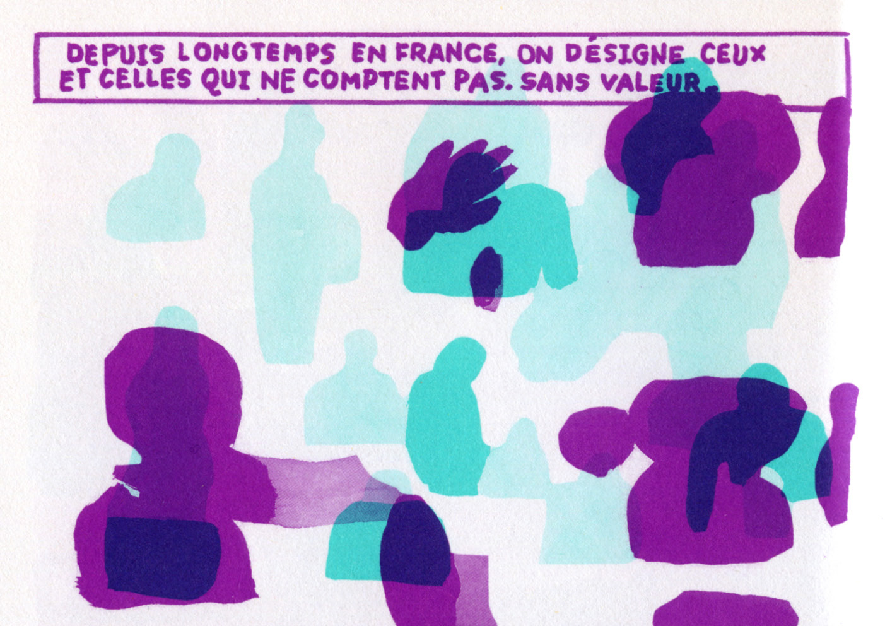
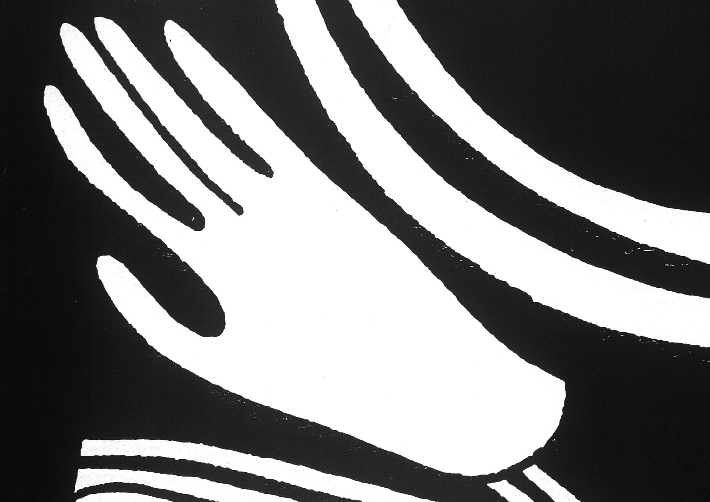
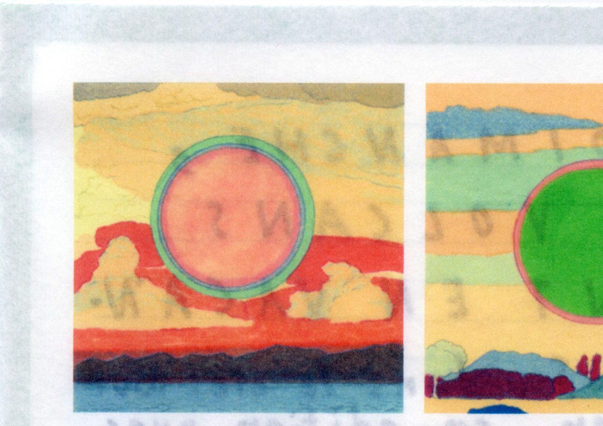
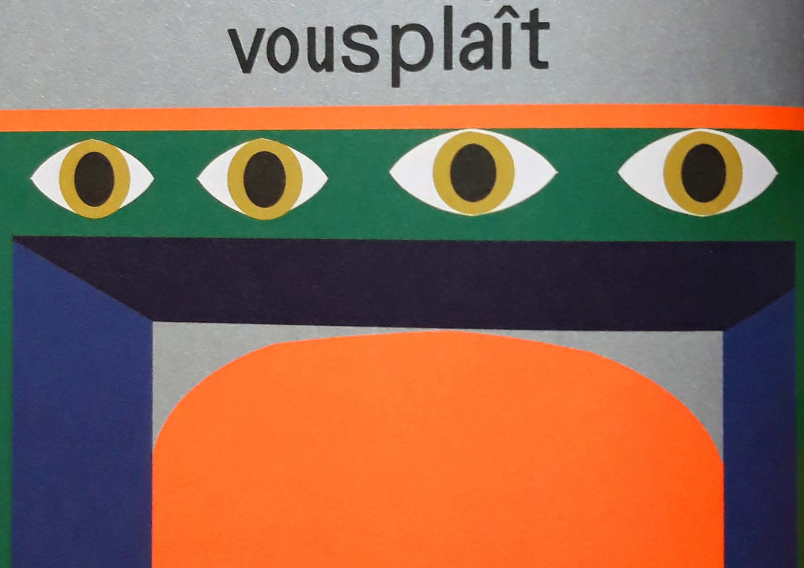
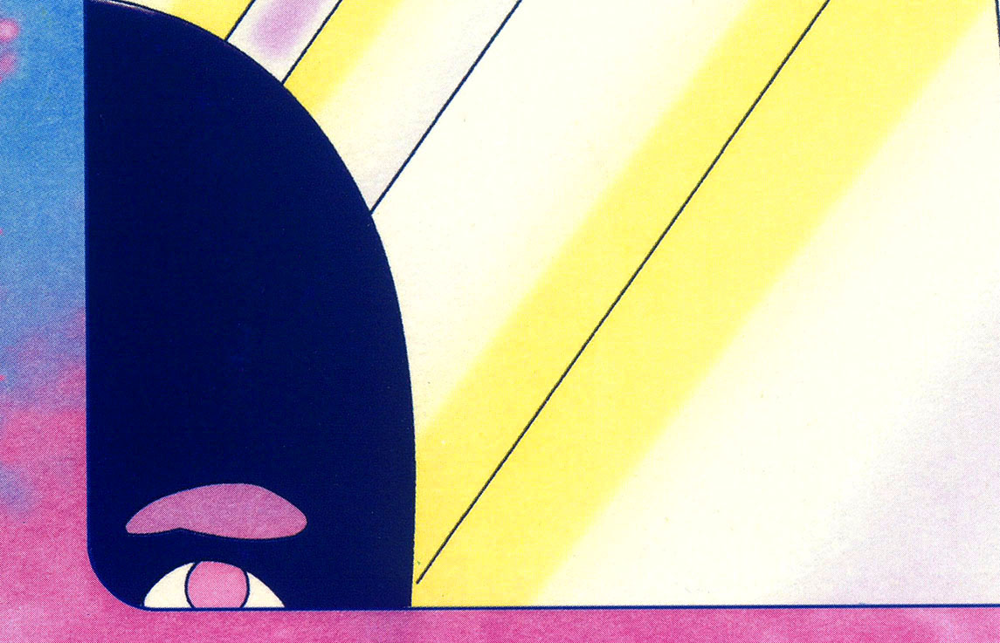
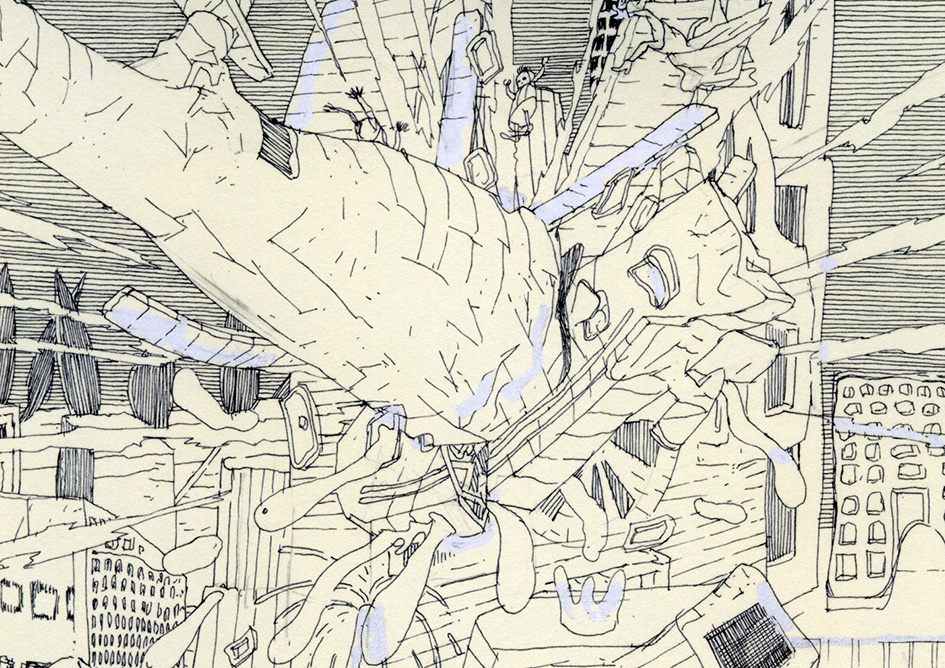
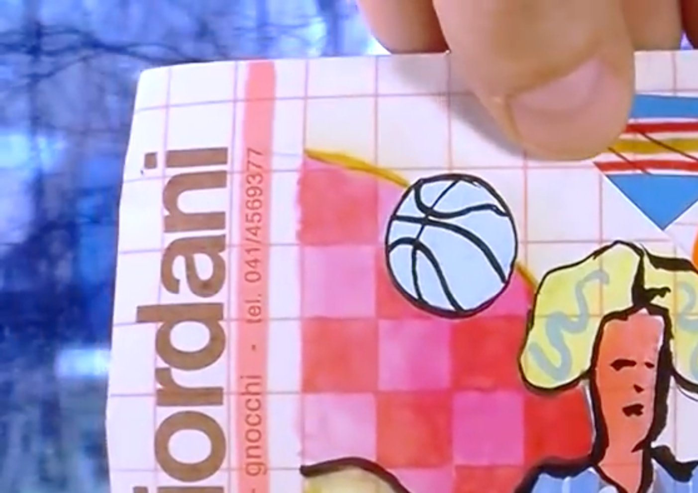

Sélection finale de l’atelier de typographie, La Cambre
Revue Bien, Monsieur #9, collectif, éditée et crée par Elsa Abderhamani et Juliette Mancini, juillet 2018. Langue : français, 600 exemplaires, 14 × 19,6 cm, 96 pages, impression : Escourbiac, offset UV, bichromie, ISSN 2341 4900
Dear Jeff Mangum, Camille Potte, auto édition, 2017. Langue : anglais, français, 100 exemplaires, 32,2 × 45 cm, 11 pages, impression : Papier Machine, planches en risographie, enveloppe en sérigraphie
Le Dimanche les volcans sont en vacances, Dans le ciel tout va bien, co-publié avec Super-structure, novembre 2015. Langue : français, designer : François de Jonge et Dans le ciel tout va bien, 19 × 24 cm, 24 pages, Impression : Sukrii Kural, jet d’encre
Revue Lagon, Marécages, collectif, éditée par Alexis Beauclair et Sammy Stein, février 2019. Langue : anglais, français, designer : Jean-Philippe Bretin, 1 500 exemplaires, 23 × 33 cm, 212 pages, impression : L’Institut Sérigraphique, Deux-Ponts, Papier Machine, 84 pages risographie, 128 pages offset quadrichromie, couverture offset + sérigraphie
Vies parallèles, Olivier Schrauwen, Actes Sud - coll. l’An 2, février 2018. Traduit de l’anglais par Volker Zimmerman et Thierry Groensteen, 23 × 32 cm, 120 pages, impression : SEPEC, offset, quadrichromie, ISBN 978-2-330-09249-8
Vivre à Frandisco, Thierry Van Hasselt & Marcel Schmitz, éditions Frémok, coll. Knock Outsiders !, Avril 2016. Langue : français, designer : Stéphane De Groef, Photograveur : Olivier Dengis, Mistral, Langue : français, 24 × 32 cm, 176 pages, impression : El Capitan, Led UV quadrichromie, ISBN 978-2-930-20496-3
Prix multimédia :Planète dommage Vidéo : https://www.youtube.com/watch?v=LHxRWQZawJg, Baptiste Brunello, 2017, Durée : 7 minutes 4 secondes, Format : 16:9